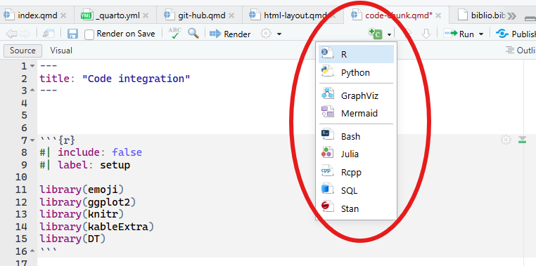
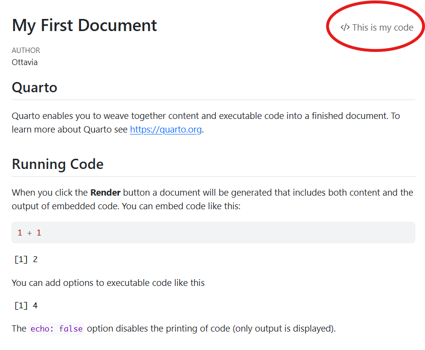
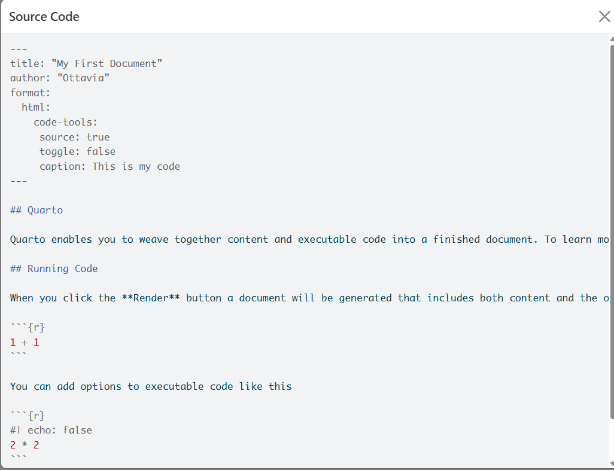
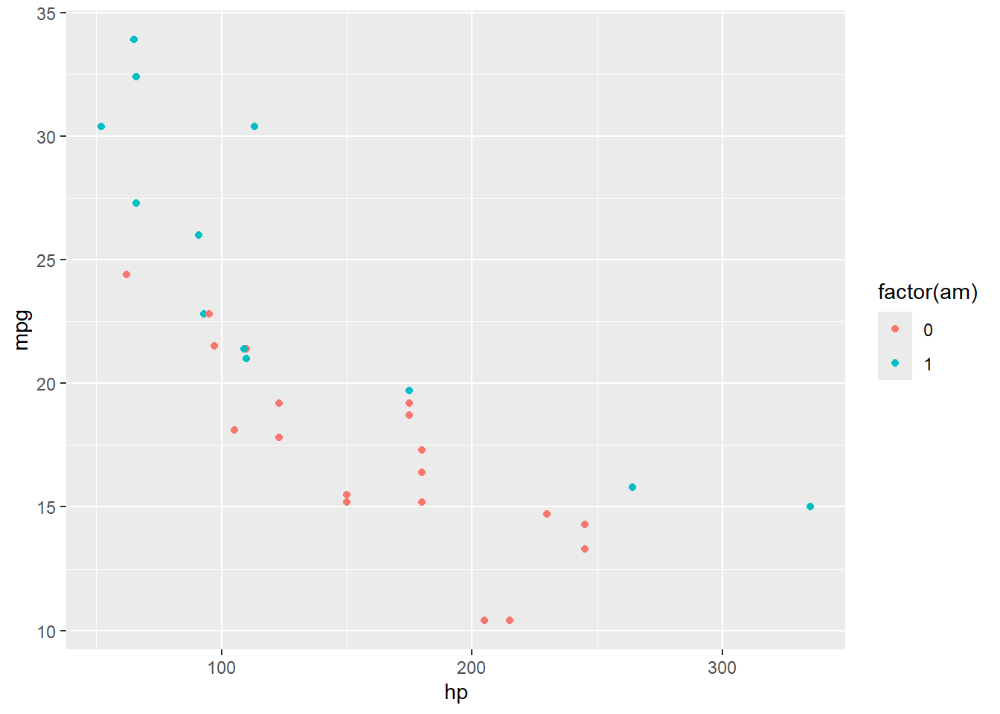
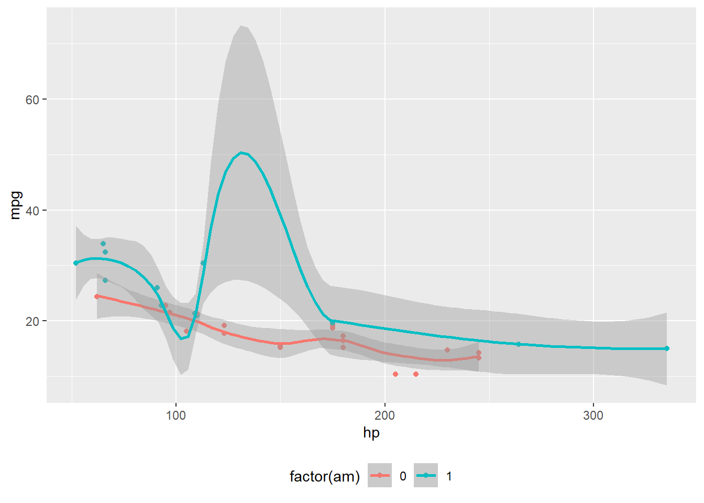
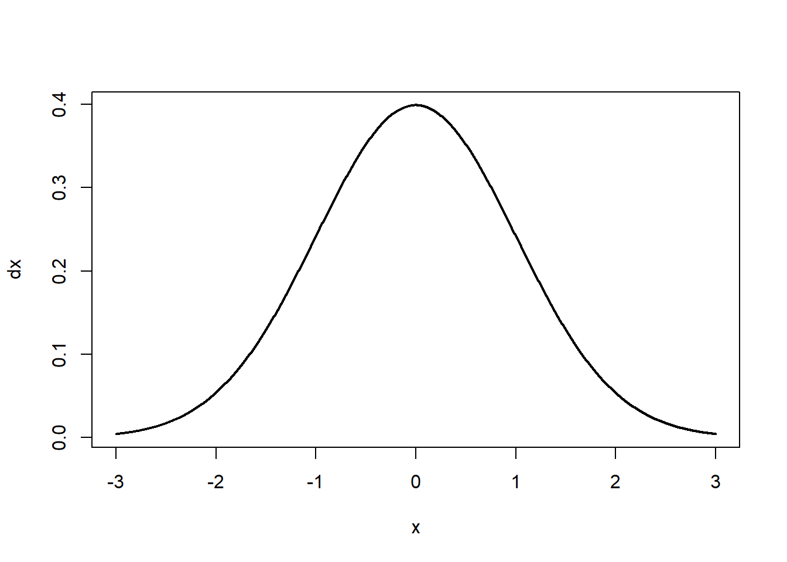
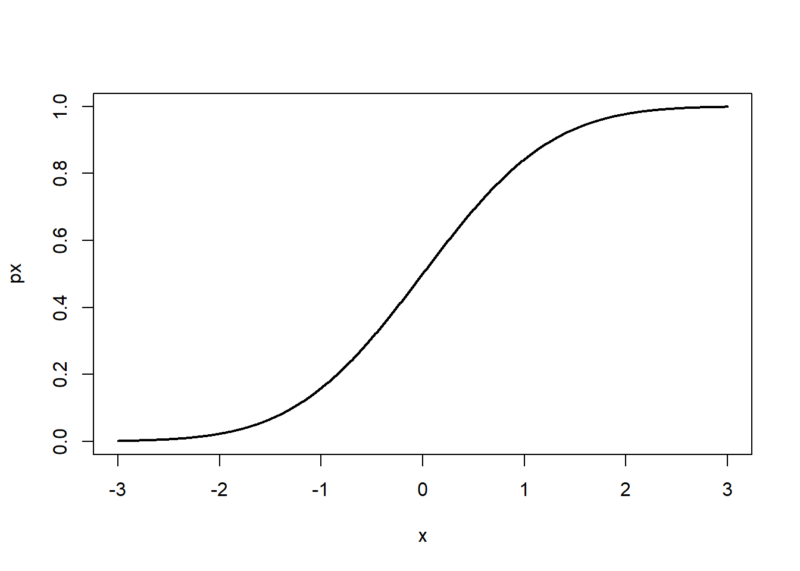
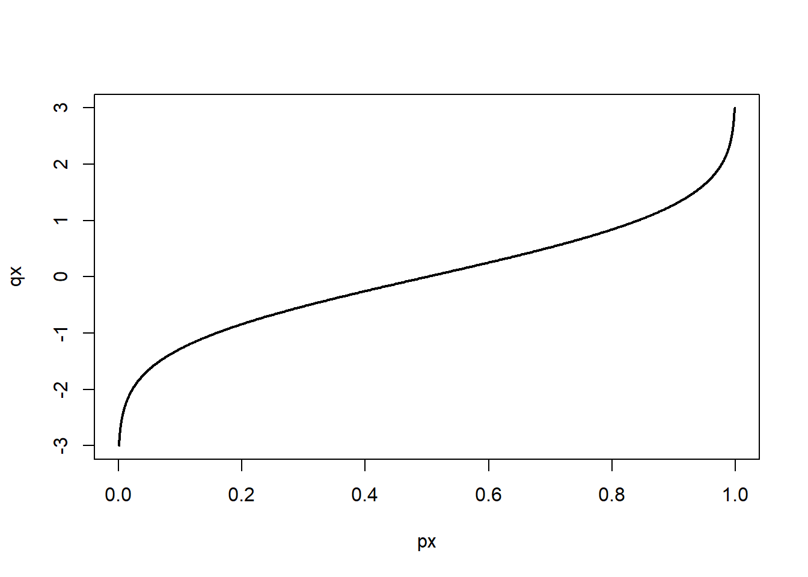

```{r}
#| label: fig-newChunk
#| fig-align: center
#| fig-cap: Open new code chunk and specifiy the language
include_graphics("img/newChunk.png")
```
The code chunks are the most brilliant thing about quarto (and RMarkdown): they allow for including actual code within a docuemnt and to carry out the specified analysis while the document is compiled. Long story short: This feature allows for having the report/article, table, graphs, data, and th code used to obtain all the above mentioned elements in one unique document.
The code chunk support different languages (Figure 1):
```{r}
#| label: fig-newChunk
#| fig-align: center
#| fig-cap: Open new code chunk and specifiy the language
include_graphics("img/newChunk.png")
```
A new code code chunk can be opened with the key combination:
shift + ctrl + iEach chunk obeys to specific settings, which define the behavior of the code and of the output.
```{r}
#| option1: true
#| option2: false
```echoControls the behavior of the code (whether it is shown and how it is shown):
Show code and results
```{r}
#| echo: true
head(cars)
```head(cars) speed dist
1 4 2
2 4 10
3 7 4
4 7 22
5 8 16
6 9 10Show only the results
```{r}
#| echo: false
head(cars)
``````{r}
head(cars)
``` speed dist
1 4 2
2 4 10
3 7 4
4 7 22
5 8 16
6 9 10Show the code, the chunk, and the results
```{r}
#| echo: fenced
head(cars)
``````{r}
head(cars)
``` speed dist
1 4 2
2 4 10
3 7 4
4 7 22
5 8 16
6 9 10evalecho does not control the code execution, which is controlled by eval
The code is executed
```{r}
#| eval: true
head(cars)
``` speed dist
1 4 2
2 4 10
3 7 4
4 7 22
5 8 16
6 9 10The code is not executed
```{r}
#| eval: false
head(cars)
```resultsThis argument controls the way in which the results are displayed and whether they are displayed or not.
Differently from eval: false (i.e., the code is not executed, if there are errors in the code you will not notice it), results does not prevent the execution of the code but only the display of the code:
```{r}
#| results: hide
head(cars)
```The code is executed! This ensures that there are no mistakes in the code.
warningControls whether the warnings associated to a code are displayed (true) or not (false):
```{r}
#| warning: true
matrix(1:10, nrow = 3, ncol = 3)
```Warning in matrix(1:10, nrow = 3, ncol = 3): data length [10] is not a
sub-multiple or multiple of the number of rows [3] [,1] [,2] [,3]
[1,] 1 4 7
[2,] 2 5 8
[3,] 3 6 9```{r}
#| warning: false
matrix(1:10, nrow = 3, ncol = 3)
``` [,1] [,2] [,3]
[1,] 1 4 7
[2,] 2 5 8
[3,] 3 6 9errorThis argument is particularly useful when teaching, because it allows for ignoring the errors in a code and display the error message. If this argument is set to false (default) the rendering of the document is stopped when the error in the code occurs. If the error is not solved, the document cannot be compiled.
Otherwise, if error: true, the error message is shown and the rendering of the document continues, regardless of the error:
```{r}
#| error: true
x <- c(1, 2, 3)
mean(y)
```Error: oggetto 'y' non trovatoincludeSuper convenient as first code chunk to load all the packages, data, preprocessing. The code is executed but no messages, warnings or results are shown
Section 1.1 presents some of the most useful options for controlling the behavior of the code chunks for each specific code chunk
However, it is possible to control the overall behavior of the code chunks from the YAML of the document with the execute argument:
[...]
execute:
echo: fenced
message: true
error: trueThe overall settings can be overruled by specific code-chunk options.
This shows the code for the entire document:


The code can also be folded. Differently, only the code in the chunks is displayed.
This can be done via the YAML (and hence is applied to ALL the code chunks in a document):
[...]
execute:
echo: fenced
message: true
error: true
code-fold: true
code-summary: See this specific codeor for a specific code chunk
```{r}
#| code-fold: true
#| code-summary: Show this code
#| column: margin
ggplot(mtcars, aes(hp, mpg, color = factor(am))) + geom_point()
```
Instead of commenting the code, you can use the code annotations to make it understandable to people:

[...]
code-annotations: belowbelow: The annotation appears below the code
hover: The annotation appears when the mouse hovers over the annotation marker
select: The annotation appears when the annotation marker is clicked
.png and .jpgInstead of importing the images with the typical Markdown code (), they can b@figported with the include_graphics() function from the knitr package (Xie 2014).
The settings for the picture can be defined by using the settings of the code chunk (these settings can also be used for the defintion of the graphic settigns, see Section 3.2)
```{r}
#| out-width: 100%
#| fig-align: center
#| fig-cap: A peacock living the life
#| fig-cap-location: bottom
#| label: fig-peacock
#| column: margin
knitr::include_graphics("img/peacock.png")
```| Option | Value | Description |
|---|---|---|
label |
fig-peacock |
The label to be used in the cross referencing of the picture. |
out-width |
100% |
The width of the picture with respect to the width of the column where the image is located. |
fig-align |
center |
Figure alignment (left, center, or right). |
fig-cap |
A peacock living the life |
The caption. |
fig-cap-location |
bottom |
The location of the caption with respect to the picture (top or margin). |
column |
margin |
The location of the picture. |
To cross reference the peacock picture in text (Figure 2), the usal cross referencing applies @fig-peacock.
The same principles apply, but this time the picture is not imported from an external file but results from the graphs resulting from the analysis. Again the cross-referencing can be obtained as usual using the label defined for the graph. For cross-referencing the plot in Figure 3, fig-mtcars.
```{r}
#| label: fig-mtcars
#| out-width: 80%
#| fig-align: center
#| fig-cap: A graph from `mtcars`
#| fig-cap-location: margin
ggplot(mtcars,
aes(hp, mpg, color = factor(am))) +
geom_point() +
geom_smooth(formula = y ~ x, method = "loess") +
theme(legend.position = 'bottom')
```
mtcars
In this case, it is fundamental to define the label, otherwise the subcaption will not appear.
The subplots can be organized in either columns or rows (or a combination fo the two):
| Option | Value | Description |
|---|---|---|
layout-ncol: |
3 |
The space is divided into columns (3, in this case) |
layout-nrow |
The space is divided into rows (not used in this example) |
The cross referencing of the picture (Figure 4) works as usual (@fig-distribution). Also the sub picture can be cross referenced, so that we can say what is depicted specifically Figure 4 (a), Figure 4 (b), Figure 4 (c) (@fig-distribution-1, @fig-distribution-2, @fig-distribution-3).
```{r}
#| label: fig-distribution
#| layout-ncol: 3
#| fig-cap: Standarzied Normal Distribution
#| fig-subcap:
#| - "Density"
#| - "Cumulative"
#| - "Quantile"
x = seq(-3,3, length.out= 1000)
d = data.frame(x = x,
dx = dnorm(x),
px = pnorm(x),
qx = qnorm(pnorm(x)))
plot(d$x, d$dx, type = "l", lwd = 2, cex = 2, xlab = "x", ylab = "dx")
plot(d$x, d$px, type = "l", lwd = 2, cex = 2, xlab = "x", ylab = "px")
plot(d$px, d$qx, type = "l", lwd = 2, cex = 2, xlab = "px", ylab = "qx")
```


Tables can be added with the kable() function (included in the knitr) package. This function is compatible with the customization settings provided by the functions in the kableExtra package (Zhu 2024). Additionally, package DT (Xie, Cheng, and Tan 2024) provides nice tools for producing tables.
The root for cross referencing the tables is tbl-.
kable(head(mtcars)) | mpg | cyl | disp | hp | drat | wt | qsec | vs | am | gear | carb | |
|---|---|---|---|---|---|---|---|---|---|---|---|
| Mazda RX4 | 21.0 | 6 | 160 | 110 | 3.90 | 2.620 | 16.46 | 0 | 1 | 4 | 4 |
| Mazda RX4 Wag | 21.0 | 6 | 160 | 110 | 3.90 | 2.875 | 17.02 | 0 | 1 | 4 | 4 |
| Datsun 710 | 22.8 | 4 | 108 | 93 | 3.85 | 2.320 | 18.61 | 1 | 1 | 4 | 1 |
| Hornet 4 Drive | 21.4 | 6 | 258 | 110 | 3.08 | 3.215 | 19.44 | 1 | 0 | 3 | 1 |
| Hornet Sportabout | 18.7 | 8 | 360 | 175 | 3.15 | 3.440 | 17.02 | 0 | 0 | 3 | 2 |
| Valiant | 18.1 | 6 | 225 | 105 | 2.76 | 3.460 | 20.22 | 1 | 0 | 3 | 1 |
It is possible to combine multiple outputs from the same code chunk:
```{r}
#| fig-column: margin
#| tbl-cap: This is a table
#| fig-cap: A graphics representation of the dataset
#| out-width: 100%
kable(head(mtcars))
ggplot(mtcars, aes(hp, mpg, color = factor(am))) + geom_point()
```| mpg | cyl | disp | hp | drat | wt | qsec | vs | am | gear | carb | |
|---|---|---|---|---|---|---|---|---|---|---|---|
| Mazda RX4 | 21.0 | 6 | 160 | 110 | 3.90 | 2.620 | 16.46 | 0 | 1 | 4 | 4 |
| Mazda RX4 Wag | 21.0 | 6 | 160 | 110 | 3.90 | 2.875 | 17.02 | 0 | 1 | 4 | 4 |
| Datsun 710 | 22.8 | 4 | 108 | 93 | 3.85 | 2.320 | 18.61 | 1 | 1 | 4 | 1 |
| Hornet 4 Drive | 21.4 | 6 | 258 | 110 | 3.08 | 3.215 | 19.44 | 1 | 0 | 3 | 1 |
| Hornet Sportabout | 18.7 | 8 | 360 | 175 | 3.15 | 3.440 | 17.02 | 0 | 0 | 3 | 2 |
| Valiant | 18.1 | 6 | 225 | 105 | 2.76 | 3.460 | 20.22 | 1 | 0 | 3 | 1 |
A graphics representation of the dataset

Code chunks can be cross referenced as well, the root for the cross referencing is lst (stands for listings):
```{r}
#| lst-label: lst-basicPlot
#| lst-cap: Basic use of the plot() function
plot(cars)
```
And it can be called from the text as usual @lst-basicPlot (Listing 1).